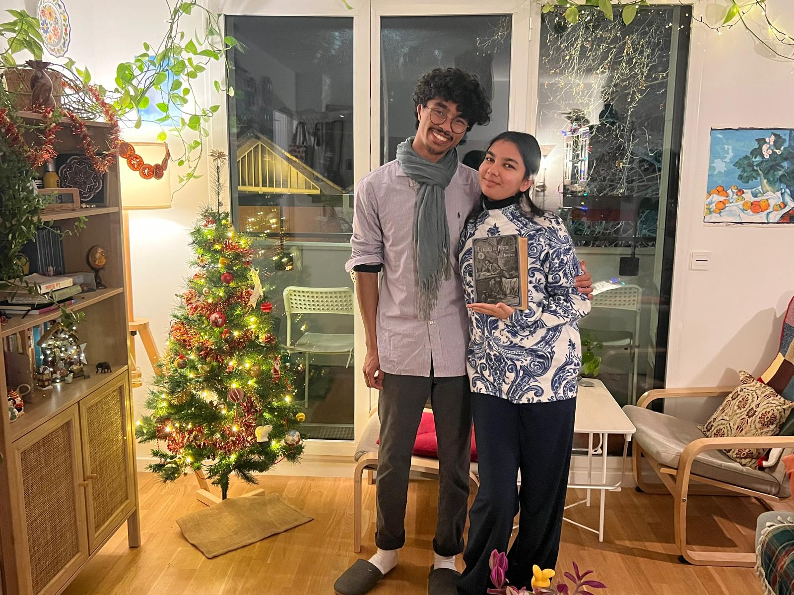

Le mariage de Ianja & Eliza

À nos côtés, pour ce grand jour
Merci de votre présence pour vous réjouir avec nous.
Retrouvez votre table et profitez de la soirée.
UNE PLACE POUR CHACUN DE VOUS
Retrouvez votre table
Recherche disponible le 29 mai 2027.
“A threefold cord is not quickly broken.”
Ecclésiastes 4.12
QUAND NOS BIEN-AIMÉS SE RENCONTRENT
À table !
Les noms des tables et des invités seront dévoilés le jour du mariage.
Version de démonstration · Les noms de tables sont proposés et les invités sont fictifs.
CÉLÉBRER LA GRÂCE DE DIEU
CELUI QUI NOUS A TANT AIMÉS ET NOUS A UNIS
Des souvenirs à deux, et aujourd’hui un bonheur à partager avec vous.



« A threefold cord is not quickly broken. »
Ecclésiastes 4.12